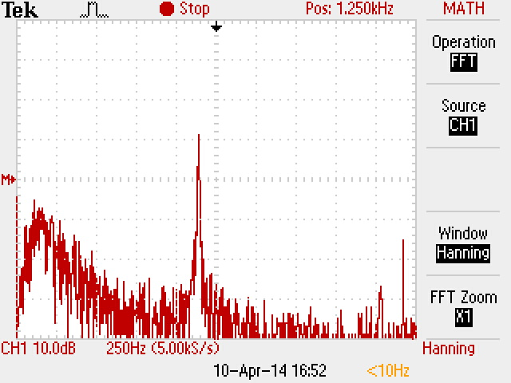
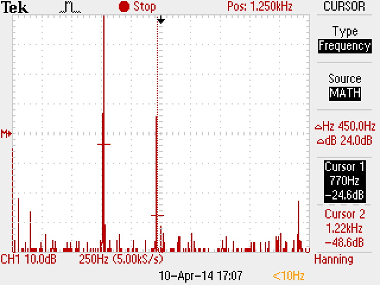

| Töö tegijate nimed: |
| Arvi Kangas |
| Margus Pärt |
| Töö tegemise kuupäev: Thu Apr 10 15:07:44 2014 |
| Terminalseadme seisund | U1 [V] | U2 [V] | U3 [V] |
| Rahuseisund | 55 | 55 | 0 |
| Hõiveseisund | 9.8 | 7.2 | 2.6 |
Valimistooni kestus: 8.
Leida vool, mis läbib terminalseadet tema mõlemates seisundites ja selgitada tulemusi.
Rahuseisund
U3 = 0 V
R_eeltakisti = 50
I_eeltakisti = 0 / 50 = 0 A
U3 = 2,6 V
R_eeltakisti = 50
I_eeltakisti = 2,6 / 50 = 52 mA
Järeldus: Rahuseisundis on vool 0 A, kuna analoogtelefon ei tegele mingi
info edastuse / kättesaamisega. Hõiveseisundis läbib ahelat vool, sest kõnet edastatakse
Arvutada telefoniaparaadi takistus ja telefoniliini takistus.
I = 52 mA = 0,052 A
U_telefon = 7,2 V
R_telefon = U_telefon / I = 7,2 / 0,052 = 138,46 Ohm
U_liin = U1_rahuseisund - U1_hõiveseisund = 55 - 9,8 = 45,2 V
R_liin = U_liin / I = 45,2 / 0,052 = 869,23 Ohm
| Valimistoon | |
| Pinge amplituud | 292 mV |
| periood | 2.28 ms |
| sagedus | 438.6 Hz |
| Vile | Signaalipilt | Spektripilt | |
| Pinge amplituud | 680 mV |  | |
| Periood | 0.48 ms | ||
| Sagedus | 2083 Hz | ||
| Vokaal | Signaalpilt | Spektripilt | |
| Pinge amplituud (kõige suurem) | |||
| Periood (kõige pikem) | |||
| Periood (kõige lühem) | |||
| Sagedus (kõige madalam) | |||
| Sagedus (kõige kõrgem) | |||
| Kutsesignaal | |
| Pinge amplituud | 114 V |
| periood | 20.4 ms |
| sagedus | 49 Hz |
| Toonvalimine |  | |
| valitud number | 1 | 4 |
| jooniselt leitud esimene sagedus | 700 Hz | 770 Hz |
| jooniselt leitud teine sagedus | 1210 Hz | 1220 Hz |
| tehtud järeldus järgnevast tabelist | Kõik on hästi | Kõik on hästi |
Labori käigus tekkis meil enamvähen arusaamine kuidas analoogtelefon signaale saadab ja vastu võtab.
Uudiseks oli see, et liini takistus on nii suur